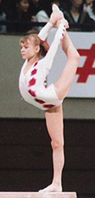

Tatiana Groshkova (USSR)
1990 European FX Silver Medalist

Medal Total
European Championships: 1 Silver
|
Tatiana was born on December 16,
1973 in Moscow. She began gymnastics at age 5, and was coached
by Elvira Saadi at Dynamo Moscow. In 1991, Saadi left the USSR to coach in Canada. In early 1992, Groshkova trained with Boris Orlov
(Bicherova's former coach) in the Netherlands for several months before returning to Russia.
Competition Results
- 1986
- Jr. GDR-USSR Dual Meet: 1st Team, 3rd AA
-
- 1987
- Champions All: 5th AA
-
- 1988
- USSR Championships: 13th AA
USSR Cup: 21st AA
-
- 1989
- Chunichi Cup: 8th AA
Dinamo Championships: 2nd AA
- Tokyo Cup: 1st FX
- USSR Championships: 3rd Team, 3rd AA
USSR Cup: 18th AA
-
- 1990
- Avignon International: 1st AA
- European Championships: 2nd FX, 10th AA
- Trophee Massilia: 1st AA
- USA-USSR Dual Meet: 1st Team, 9th AA
USSR Championships: 1st Team, 9th AA, 5th UB
- USSR Cup: 1st B, 11th AA
USSR v. The World: 1st AA
World Stars: 2nd AA, 1st FX, 3rd UB, 3rd B
-
- 1991
- USSR Championships: 7th UB, 8th FX
USSR Spartakiade: 9th AA
World Stars: 7th AA (reserve)
1992
Grand Prix of Zwijndrecht: 2nd AA
Zierikzee International: 3rd AA
-
This page was last updated on July 19, 2024.
© Gymn
Forum